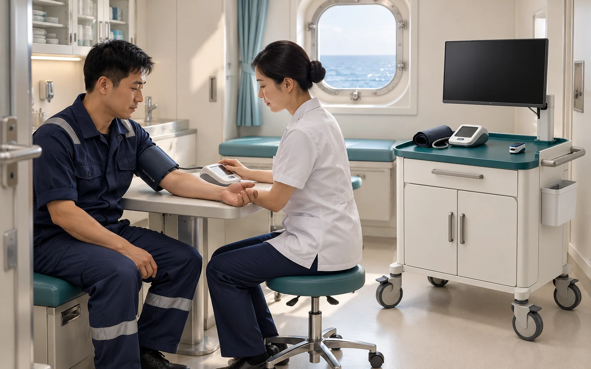

航程长，需求持续
在长期海上作业中，日常咨询、健康信息采集与专业支持需要形成连贯的服务路径。
MERCHANT VESSELS
面向长期航行与远洋作业场景，结合船队规模、航线及网络条件，配置船端采集设备与远程医疗支持通道。
01 UNDERSTAND THE CONTEXT
每一艘船、每一处作业平台，
都有不同的环境与健康需求。
在长期海上作业中，日常咨询、健康信息采集与专业支持需要形成连贯的服务路径。
结合现有医务空间与设备条件，确认适合的采集项目、工作站配置及操作流程。
综合航线与网络条件，明确资料传输方式、沟通通道及服务边界。

CARE IN EVERY CONNECTION
专业支持的价值，落在每一个具体的健康需求里。结合实际环境，让信息采集、远程沟通与后续支持形成清晰、连贯的路径。
影像为概念场景。设备配置、服务范围与响应方式以正式接入方案为准。
从了解您的实际场景开始，一起探索适合的医疗支持方案。